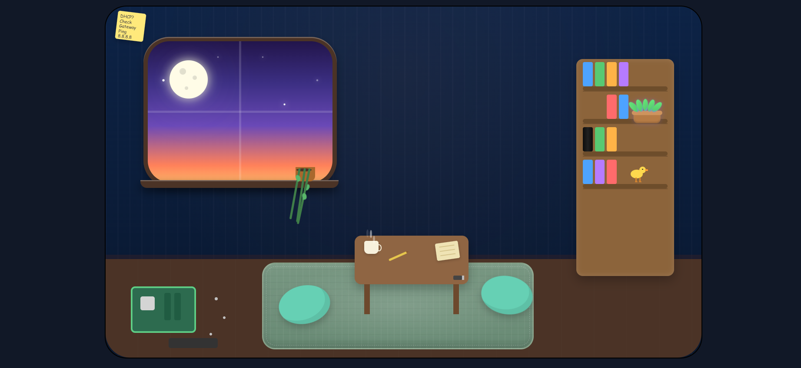
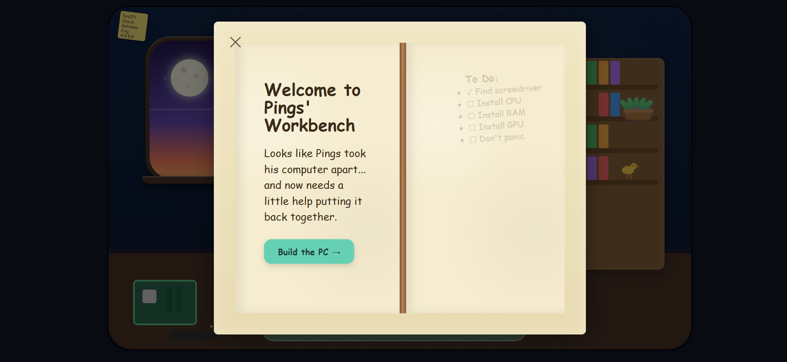

NETWORKING LEARNING PLATFORM
Making networking easier to understand through practical tools, troubleshooting resources, and beginner-friendly explanations.
ByteGuard is an educational platform designed to make IT concepts approachable through interactive learning instead of long documentation.
Rather than simply reading about networking and computer hardware, users can explore a virtual workspace, complete guided activities, and learn alongside Pings, ByteGuard’s built-in companion.

After spending months studying networking and troubleshooting, I noticed how difficult many networking resources were for beginners.
ByteGuard was designed to make those concepts easier to understand and less intimidating for people who are just getting started.

Building ByteGuard strengthened my understanding of responsive design, user experience, educational content creation, and presenting technical concepts in a beginner-friendly way.